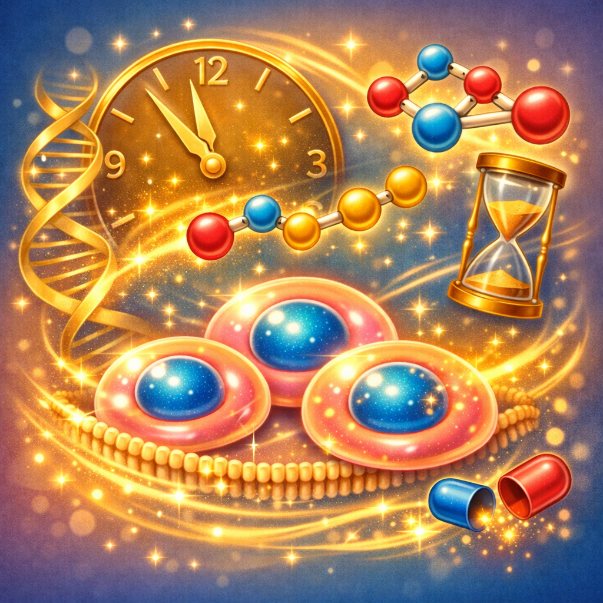

La búsqueda de la longevidad saludable
Envejecer es inevitable, pero cómo envejecemos está cada vez más bajo nuestro control. Los péptidos emergen como una de las herramientas más prometedoras en la ciencia de la longevidad, atacando los mecanismos fundamentales del envejecimiento a nivel celular.
🧬 Dato clave sobre envejecimiento
El envejecimiento se caracteriza por 9 "hallmarks" o marcas distintivas. Los péptidos pueden influir positivamente en al menos 5 de ellas: disfunción mitocondrial, acortamiento de telómeros, senescencia celular, comunicación intercelular alterada y pérdida de proteostasis.
Telómeros y péptidos
Los telómeros son las capuchas protectoras en los extremos de nuestros cromosomas. Cada vez que una célula se divide, los telómeros se acortan. Cuando se vuelven demasiado cortos, la célula entra en senescencia o muere. El péptido Epitalon ha demostrado en estudios la capacidad de activar la telomerasa, la enzima que alarga los telómeros.
Mitocondrias: las centrales energéticas
Con la edad, nuestras mitocondrias pierden eficiencia, produciendo menos energía y más radicales libres. Péptidos como SS-31 (Elamipretide) se dirigen específicamente a las mitocondrias, protegiéndolas del daño oxidativo y mejorando su función energética.
Péptidos antienvejecimiento destacados
| Péptido | Mecanismo | Beneficio en longevidad |
|---|---|---|
| Epitalon | Activa telomerasa | Alarga telómeros |
| SS-31 | Protección mitocondrial | Mejora energía celular |
| GHK-Cu | Remodelación tisular | Rejuvenecimiento de tejidos |
| FOXO4-DRI | Elimina células senescentes | Limpieza celular |
Senescencia celular
Las células senescentes son células "zombi" que ya no se dividen pero tampoco mueren. Se acumulan con la edad y secretan sustancias inflamatorias que dañan a las células vecinas. El péptido FOXO4-DRI ha mostrado resultados sorprendentes al eliminar selectivamente estas células problemáticas.
El futuro de la longevidad
La investigación en péptidos para longevidad está en plena expansión. Cada año se descubren nuevas secuencias con potencial antienvejecimiento. Combinados con otras intervenciones como la restricción calórica y el ejercicio, los péptidos podrían añadir no solo años a nuestra vida, sino vida a nuestros años.